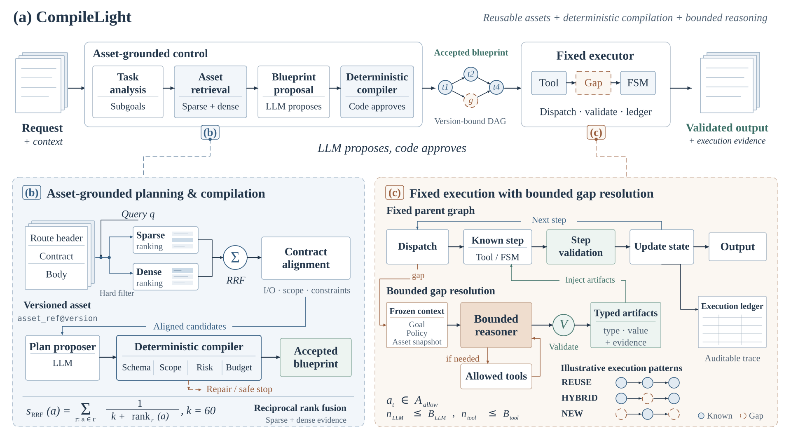
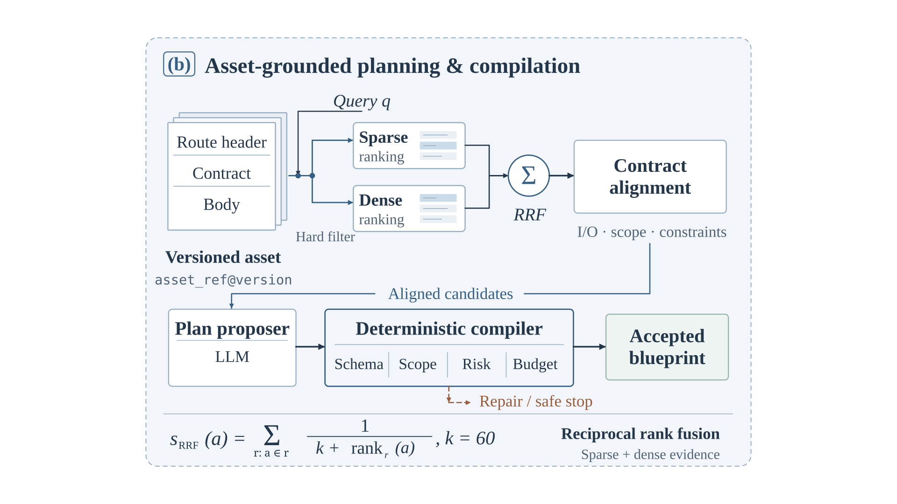
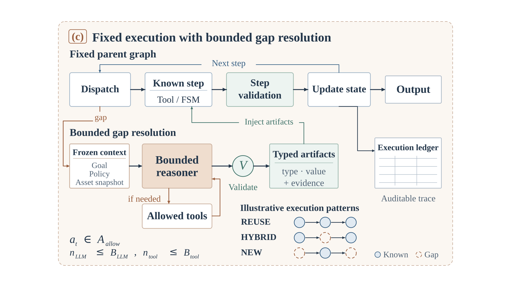
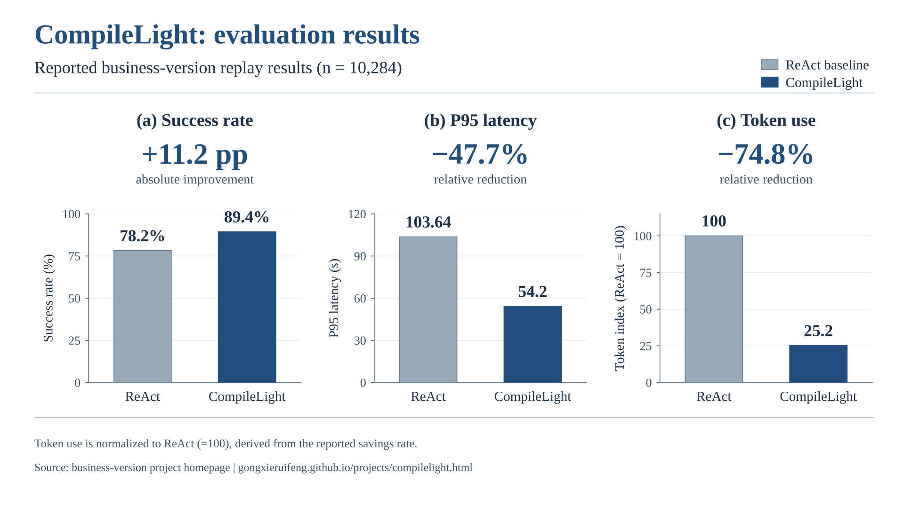

让已知能力进入资产库
Header 帮助找到能力，Contract 判断能否适配，Body 提供实现。版本引用让本次计划有明确的执行依据。
LLM 提议，代码批准。已知能力复用，未知缺口有界解析。
围绕企业客服的重复任务，把工具、状态机与工作流组织为版本化资产；将模型提案编译为绑定资产版本的计划，再由固定 LangGraph 父图消费已知能力与经过验证的缺口产物。
评测范围：业务版 10,284 次流量回放。下方区分业务成果与公开轻量版实现。
企业客服的高频任务经常复用相同工具、业务规则和执行路径。让模型逐次决定每一步，会反复支付规划成本，也让权限、状态变化与执行结果的核验分散在推理过程中。CompileLight 将这些稳定能力沉淀为可检索、可组合、可验证的资产。
Header 帮助找到能力，Contract 判断能否适配，Body 提供实现。版本引用让本次计划有明确的执行依据。
模型理解任务并提出 Blueprint；Compiler 校验结构、绑定、政策与预算，批准后才进入执行。
已知能力由固定父图调度；缺口在冻结上下文内解析，经验证成为类型化产物，再供执行器消费。
总图按一次请求的生命周期展开：任务分析与资产检索提供规划依据，模型生成 Blueprint 提案，确定性编译器批准版本绑定的 DAG，固定执行器消费计划并留下运行证据。

图中的 DAG 表示请求的步骤依赖与资产绑定。LangGraph 父图的调度拓扑保持固定，不随每个请求重新生成。
要复用一个能力，需要同时解决“找得到”“能接上”和“版本明确”三个问题。资产以 asset_ref@version 引用，Header、Contract、Body 分别服务于召回、适配与执行。

提供用于召回和路由的能力描述，支撑稀疏与稠密检索。
声明输入、输出、作用域与约束，判断步骤之间能否绑定、能力能否覆盖当前子目标。
保存工具实现、状态机片段或工作流结构，与资产版本共同构成本次执行依据。
先依据任务和政策边界筛选资产，避免把不允许使用的能力带入候选规划。
稀疏检索保留关键词匹配，稠密检索补充语义相似；按两路排名累加倒数贡献，不直接混加不同检索器的原始分数。
s_RRF(a) = Σ_{r: a ∈ r} 1 / (k + rank_r(a))，k = 60这是排名融合阶段的分数；候选后续仍要经过契约对齐、修正与扩展。
把子目标需要的输入输出，与候选能力的 Contract 对照。能覆盖的步骤进入复用计划，未覆盖的部分保留为需要解析的缺口。
模型根据对齐后的资产提出 Blueprint，描述子任务、依赖和能力组合。Compiler 将提案逐项校验，绑定具体资产版本与输入输出，使执行器能够按明确的计划消费能力。
校验计划结构、DAG 依赖、参数类型、输入输出绑定及资产引用，确保步骤可以被解释和调度。
核对注册视图、资产快照、工具授权及任务覆盖，确定本次运行可以使用的能力。
检查风险和副作用约束，禁止不满足执行政策的提案直接进入执行。
检查计划与调用预算，使步骤数量及后续解析的调用范围处于可检查的约束内。
通过：交付绑定资产版本的 Blueprint、步骤依赖与输入输出关系。
失败：可修复问题进入受限修复；硬策略不满足时安全停止。
四组门禁是展示分组；实际检查还包含 Validator、覆盖与副作用等。“代码批准”限定 Compiler 的确定性校验，任务分析、契约对齐与提案仍可能调用模型。
执行器把批准的 Blueprint 作为运行数据，使用固定的调度、校验和状态更新流程。已有能力按资产调用；未覆盖部分在冻结目标、政策和资产快照内解析，形成经过校验的类型化产物。

父图选择就绪步骤，调用绑定的 Tool / FSM 能力，对输出进行步骤校验，再推进状态和后续依赖。
System 2 围绕明确目标进行有界推理，按需调用允许的工具；解析结果通过 Validator 后，成为带有类型、值和证据的产物。
缺口产物需要通过契约校验，才能参与后续执行。固定父图消费这些结果、完成步骤校验与状态更新，并将执行结果和消耗信息写入 Ledger。
aₜ ∈ A_allow；n_LLM ≤ B_LLM；n_tool ≤ B_tool已有能力覆盖步骤，执行阶段优先复用确定性能力，减少额外决策推理。
保留已知步骤，只为未覆盖部分解析产物，再与已有能力共同完成任务。
在覆盖不足时进行受控规划或探索，任务中仍可包含已有资产步骤。
REUSE 的前置分析与提案仍可能消耗 Token。有界约束在这里指动作和调用次数，不将 Token 总量或耗时额外表述为已验证的硬上界。
学术图表达的是职责和数据交付关系。固定公开参考版本中，控制服务先完成 System 2 缺口预解析，再将预计算结果提交给固定执行器；执行器从运行状态中消费这些产物。
固定父图按加载计划、选择就绪步骤、调度、校验输出、写入账本与路由下一步运行，请求 Blueprint 作为状态数据传入。图中的缺口支路用于解释产物供固定图消费的关系。
实现入口：control_plane/service.py · execution/graph.py · execution/meta_executor.py。
Ledger 留存本次执行的结果、消耗与审计轨迹。经验经过审核和验证后，才成为后续版本的资产；本次运行的资产快照保持固定。
在业务版 10,284 次流量回放中，与 ReAct 基线比较，综合成功率、端到端 P95 和 Token 开销采用以下口径。

| 指标 | ReAct | CompileLight | 变化 |
|---|---|---|---|
| 综合成功率 | 78.2% | 89.4% | 增加 11.2 个百分点 |
| 端到端 P95 | 103.64s | 54.2s | 相对降低 47.7% |
| Token 用量指数 | 100 | 25.2 | 节省 74.8% |
以上为业务版回放结果，公开轻量版代码用于展示可运行的核心机制，两者分别对应各自的版本与用途。
本页展示企业场景中的业务版设计与成果；GitHub 仓库提供便于本地运行和理解机制的轻量公开版。两者保留资产复用、计划编译和固定执行器的主线，数据库与模型选型有所区别。
| 层级 | 业务版 | 公开轻量版 |
|---|---|---|
| 资产存储与检索 | PostgreSQL FTS + pgvector，RRF 融合 | SQLite FTS5 + NumPy，RRF 融合 |
| 模型接入 | Claude / DeepSeek / GPT，可切换 | Ollama 本地模型 |
| 服务与执行 | FastAPI + Gradio，LangGraph 固定 Meta-Executor | FastAPI + Gradio，LangGraph 固定父图 |
| 评测口径 | 本页的 10,284 次流量回放成果 | 以仓库对应实现与运行说明为准 |
架构图为结合业务介绍与公开核心实现整理的概念图。公开实现参考固定提交 f5c9f03。